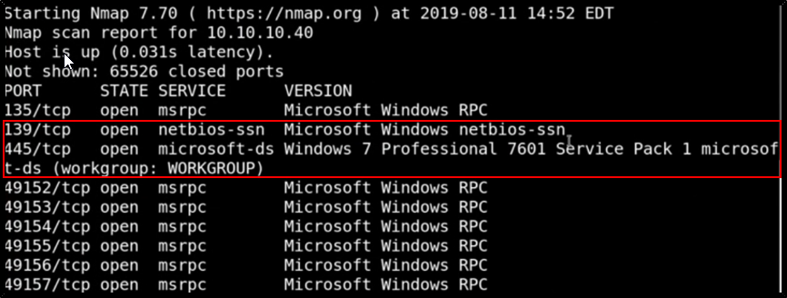
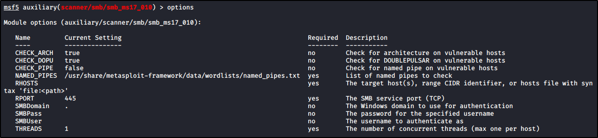
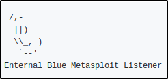

Walktrough - Blue
Windows Machine
First, start a "nmap -T4 -A -p- IPADDRESS"


We can see that it is using Samba and a Windows 7 Professional
This will be with a huge probability a Windows 7 system
################################################################
Samba
We can try so Smbclient to port 445, but we know that this host can be vulnerable to EternalBlue
We can search for MS17-010 exploit (EternalBlue)



The host seems to be likely vulnerable!


Now we can use the mobule EternalBlue (care, can crash the machine!)


CARE: MIGHT CRASH THE MACHINE AND MAYBE YOU NEED TO TRY MORE TIMES
Run the EternalBlue:


The other way
Manual way to exploit SMB without Metasploit: AutoBlue
https://github.com/3ndG4me/AutoBlue-MS17-010


We can check the target:


Let's follow the instructions:





(This will create a Metasploit Listener)


Last step: A session into Metasploit listener will be created